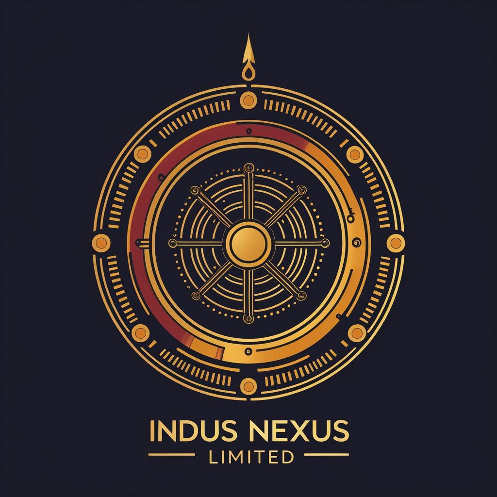

Career · Entrepreneurship · Progress · Momentum
Audit Manager · ACCA · SOX/ICFR Specialist · Founder
Senior financial controls professional with 9+ years across the Big 4 — BDO, PwC UK, Deloitte Middle East, PwC Pakistan — specialising in external audit, SOX/ICFR controls assurance, group reporting and financial services regulation. Proven delivery for marquee clients including HSBC Holdings, Goldman Sachs, Bank of America, and Revolut. Currently building Indus Nexus Limited, a UK-registered financial advisory venture, while actively pursuing Group Reporting and Senior Finance leadership roles in London.
Building a premium financial controls and advisory firm leveraging Big 4 expertise. Delivering SOX/ICFR advisory, financial reporting excellence, process design and business transformation for ambitious organisations.
Led end-to-end statutory audits and interim reviews for financial services clients under IFRS and UK GAAP. Delivered controls assurance, walkthroughs, RCMs and design/operating effectiveness testing. Managed sample-based testing, deficiency evaluation, remediation and closure. Applied analytics to focus testing on higher-risk areas.
Delivered controls assurance and referred reporting audit engagements in complex group environments under IFRS and UK GAAP. Walkthroughs, RCMs, design/operating effectiveness testing across manual and automated controls. Completed substantive audit work over high-value balance sheet areas including loans, investments and intangibles.
Statutory audit execution for regulated financial services under IFRS and local prudential requirements. Led IFRS-9 audit and advisory work including Expected Credit Losses review. Enhanced audit quality through standardised workpapers, targeted analytics and change agent role for audit transformation.
End-to-end statutory audits for banking and investment clients under IFRS and local regulatory requirements. Internal controls testing, regulatory reporting, prudential compliance. Team leadership, coaching, budgeting, client management.
A premium advisory firm built on the conviction that Big 4 financial intelligence should not be the exclusive privilege of major corporations. Indus Nexus bridges the gap — delivering institutional-grade controls assurance, audit expertise and business transformation advisory to organisations at every stage of ambition.